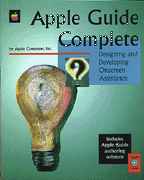

Apple Guide Complete: Designing and Developing Onscreen Assistance
If you've been waiting to give your users more than just onscreen reference information, now you can with Apple Guide, Apple Computer's innovative help delivery system. With Apple Guide, you can produce guide files that actually lead users, step by step, through complex tasks and concepts. If you want to provide task-oriented, context-specific instructions, Apple Guide gives you the ease and flexibility to do so. You'll learn about the complete cycle of designing, scripting, and coding guide files in these four parts of the book:Guide Maker, the software you use to build and test guide files, is also available on the Web at
- an overview of Apple Guide features, plus extensive design tips and examples
- complete instructions on how to build, test, and localize guide files
- information on integrating help files into your application using Apple Guide's API
- a complete reference for all the commands in Guide Script, the authoring language used to create your source files
Availability: Click below to obtain Apple Guide Complete in any of the following formats.

Acrobat (10.2 MB).
Book Contents
- Figures, Tables, and Listings
- Preface - About This Book
- Part 1 - Designing Guide Files
- Chapter 1 - Introduction to Apple Guide
- Chapter 2 - Authoring Tips and Suggestions
- Chapter 3 - Planning Your Help Content
- Part 2 - Building Guide Files
- Chapter 4 - Introduction to Guide Maker
- Chapter 5 - Creating Your Guide File
- Chapter 6 - Testing Your Guide File
- Chapter 7 - Localizing Your Guide File
- Chapter 8 - Converting Windows Help Files
- Part 3 - Integrating Guide Files
- Chapter 9 - Apple Guide API
- Part 4 - Scripting Guide Files
- Chapter 10 - Guide Script Command Reference
- Appendixes
- Appendix A - Guide Script Command Abbreviations
- Appendix B - Guide Script Commands and Parameters Quick Reference
- Appendix C - SurfWriter Guide and Its Source Files
- Appendix D - Checklist
- Glossary